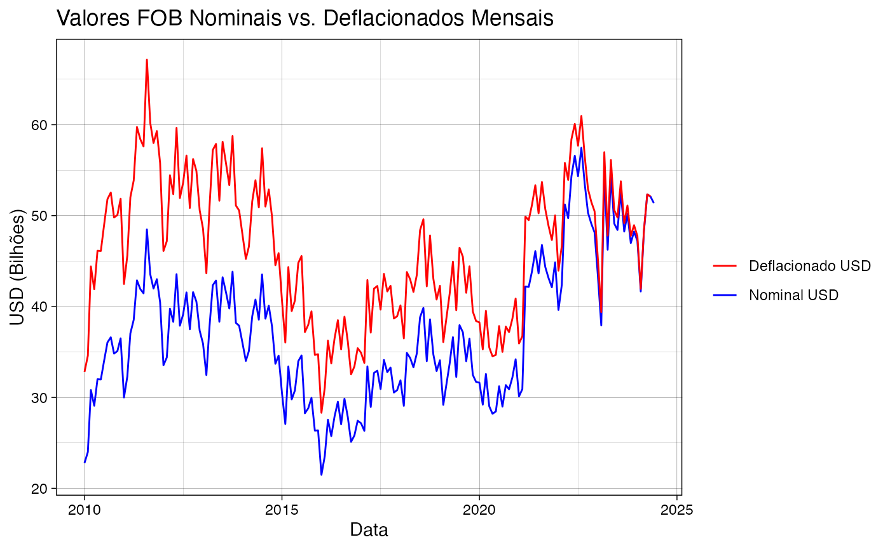
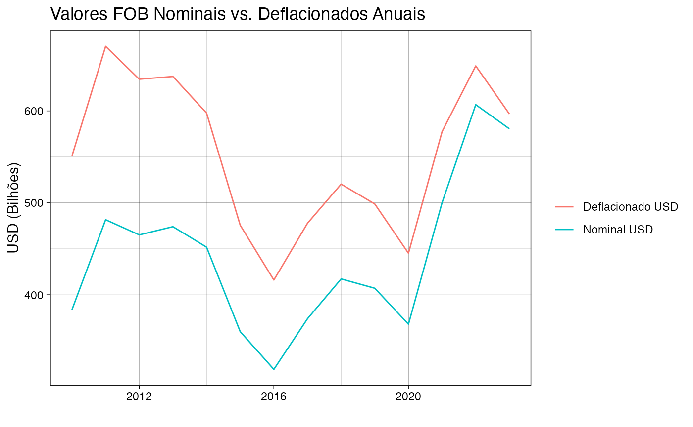
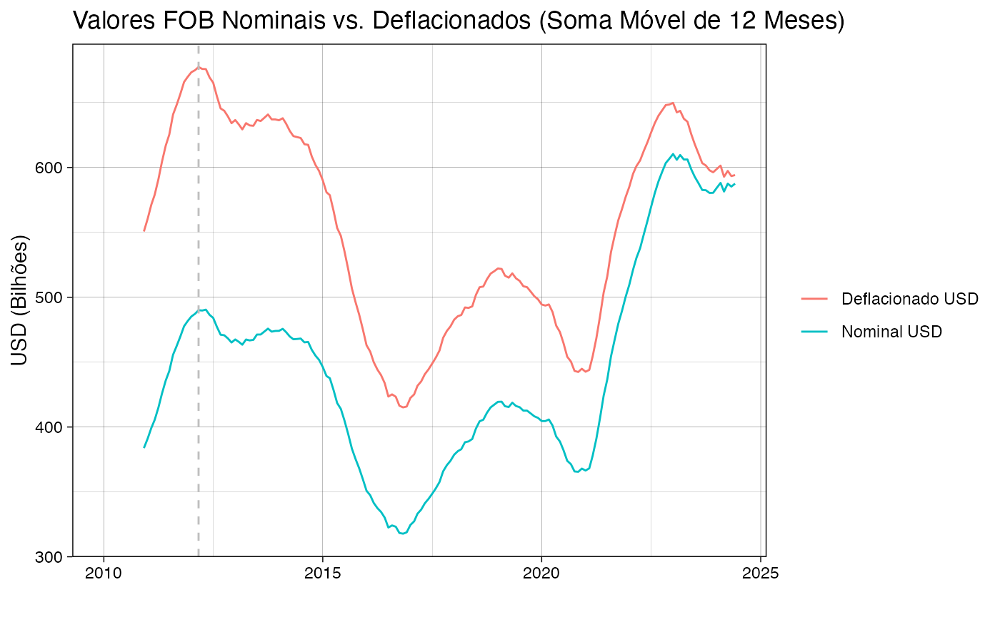
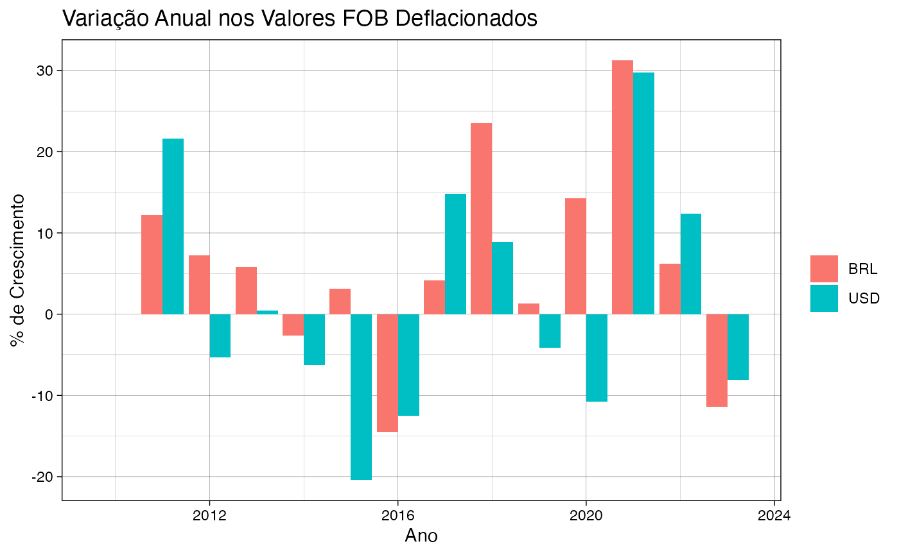

Deflacionando o Comex
Análise de Dados de Comércio Exterior Brasileiro Deflacionados Utilizando o Pacote comexr
Eduardo Leoni
2024-07-06
Source:vignettes/articles/deflacionando_o_comex.Rmd
deflacionando_o_comex.RmdIntrodução
Esta análise utiliza o pacote comexr do R para baixar, limpar e analisar dados de comércio exterior brasileiro, com foco na importância da desinflação. A inflação distorce o valor real do comércio ao longo do tempo, e a desinflação é o processo de ajustar esses valores a um ano base comum para remover essa distorção. Examinaremos a diferença entre os valores comerciais nominais e deflacionados, tanto mensalmente quanto anualmente. Além disso, visualizaremos as mudanças anuais nesses valores e exploraremos somas móveis para entender as tendências em um período mais longo.
Preparação dos Dados
# Download
if (params$download) {
comex_download(year=2010:lubridate::year(Sys.Date()), types = "ncm", check = FALSE)
}
## limpeza e renomeação, e agregação de dados
monthly_summary <- comex_ncm() %>%
filter(year >= 2010) %>% # Filtrar dados a partir de 2010
# Agrega valores comerciais por mês
group_by(year, date) %>%
comex_sum() %>% # Soma as colunas relevantes
# Deflaciona os valores usando o IPCA
comex_deflate()Visualização e Análise
Valores Nominais vs. Deflacionados (Mensais)
ggplot(aes(x = date), data=monthly_summary) +
geom_line(aes(y = fob_usd / 1e9, color = "Nominal USD")) +
geom_line(aes(y = fob_usd_deflated / 1e9, color = "Deflacionado USD")) +
labs(title = "Valores FOB Nominais vs. Deflacionados Mensais", x = "Data", y = "USD (Bilhões)") +
scale_color_manual(values = c("Nominal USD" = "blue", "Deflacionado USD" = "red")) +
theme_linedraw() +
labs(color="")
Este gráfico contrasta os valores FOB (Free On Board) nominais (não ajustados pela inflação) e deflacionados em bilhões de dólares americanos ao longo do tempo. A diferença entre as linhas ilustra como a inflação afeta os valores comerciais percebidos.
Valores Nominais vs. Deflacionados (Anuais)
ggplot(aes(x = year), data=yearly_summary) +
geom_line(aes(y = fob_usd / 1e9, color = "Nominal USD")) +
geom_line(aes(y = fob_usd_deflated / 1e9, color = "Deflacionado USD")) +
labs(title = "Valores FOB Nominais vs. Deflacionados Anuais", x = "", y = "USD (Bilhões)", color="") +
theme_linedraw()
Semelhante ao gráfico mensal, este mostra a comparação entre os valores FOB nominais e deflacionados, mas agregados em base anual. Ele fornece uma visão de longo prazo mais clara do impacto da inflação.
Valores Nominais vs. Deflacionados (Somas Móveis de 12 Meses)
monthly_summary |>
ungroup() |>
# somas móveis de 12 meses
comex_roll() -> m12_summary
dmax <- m12_summary%>%ungroup%>%arrange(desc(fob_usd_deflated_12))%>%head(1)%>%pull(date)
ggplot(m12_summary, aes(x = date)) +
geom_line(aes(y = fob_usd_12 / 1e9, color = "Nominal USD")) +
geom_line(aes(y = fob_usd_deflated_12 / 1e9, color = "Deflacionado USD")) +
labs(title = "Valores FOB Nominais vs. Deflacionados (Soma Móvel de 12 Meses)",
x = "", y = "USD (Bilhões)", color= "") +
theme_linedraw() +
geom_vline(xintercept = dmax, linetype = "dashed", color = "gray") 
Este gráfico utiliza a soma móvel de 12 meses para suavizar flutuações de curto prazo nos dados e mostrar a tendência de longo prazo. A linha vertical marca a data com o valor máximo deflacionado (em USD utilizando CPI), 03/2012.
Variação Anual nos Valores FOB Deflacionados (USD e BRL)
yearly_summary |>
mutate(
fob_usd_deflated_growth = (fob_usd_deflated / lag(fob_usd_deflated) - 1) * 100,
fob_brl_deflated_growth = (fob_brl_deflated / lag(fob_brl_deflated) - 1) * 100
) |>
select(year, fob_brl_deflated_growth, fob_usd_deflated_growth) |>
tidyr::pivot_longer(cols = c(fob_brl_deflated_growth, fob_usd_deflated_growth)) |>
mutate(name=gsub("fob_(.*)_deflated_growth", "\\1", name)|>toupper())|>
ggplot(aes(x = year, y = value, fill = name)) +
geom_col(position = "dodge") +
theme_linedraw() +
labs(title = "Variação Anual nos Valores FOB Deflacionados", x = "Ano", y = "% de Crescimento", fill="")
Este gráfico de barras ilustra as variações percentuais anuais nos valores FOB deflacionados, tanto em USD quanto em BRL. Ajuda a identificar períodos de crescimento ou declínio no comércio, ajustados pela inflação.
Conclusão
Ao incorporar a desinflação em nossa análise dos dados de comércio brasileiro, obtemos uma compreensão mais precisa das tendências econômicas subjacentes. O pacote comexr simplifica esse processo, permitindo que nos concentremos em gerar insights em vez de lidar com as complexidades da manipulação de dados.